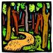
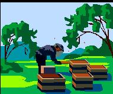
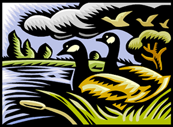
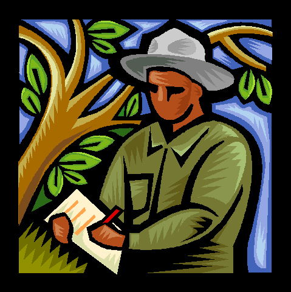
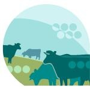
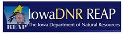

Sustainable Backcountry Trail Attraction
Whiterock's trail system will offer the general public - from across Iowa, the Midwest, the nation, and abroad - the opportunity to discover and enjoy some of the largest unbroken natural and farmed landscapes in Iowa. People of all ages and with different physical abilities will be able to safely explore the variety and richness of the different environments, the diversity of plant and animal life, and learn about land conservation and sustainable agriculture. |
Thanks to the Des Moines Register for this great article: Swapping seed corn for bikes. Read our Case Statement for more information. Press release: Whiterock Conservancy is nearing completion of its fundraising for this unique project! Check out the most current map for our planned backcountry trail system. http://www.desmoinesregister.com/article/D2/20131103/LIFE/310200085/Swapping-seed-corn-bikes
|
Beekeeping
Gary Olsen, from Audubon, Iowa, is currently working on a beekeeping project at Whiterock. Why does Whiterock like to have bees on the land? Honeybees are important pollinators of many flowering plants. They pollinate nearby crops; sometimes up to as far as four miles away from their hive. This pollination is essential for good yields for some flowering crops, largely common fruit and vegetables. Current ISU research is looking into the benefit of pollinators on soybean crops and other research suggests pollinators also help more traditional row and forage crops. Also, with the colony collapse disorder and other problems, the number of active hives has generally decreased. Whiterock wants to help ourselves and our neighbors by allowing hives to be responsibly placed on the land to provide habitat to honeybees.
|
Check out these project photos:
|
Pond Renovation and Brush Management
We cleaned out the invasive carp, are restocking the main pond, added aerators, and cleared out the brush along the hillside adjacent to these ponds. Stop by and see the progress we made! Matt, Mark, and Gary have been dedicated workers on this project and deserve kudos for all thay've accomplished. We would also like to thank Guthrie County Community Foundation for their grant which allowed us to purchase new chain saws and safety equipment for this project. Thanks also to the NRCS for providing funding for brush management. |
Project Photos (under construction - more to be added soon!):
|
Annual Bio Blitz
Each year we invite scientists and other professionals to lead us in an exploration of our seven-square-miles of prairies, timber, and river bottoms. These professionals help us identify all the varieties of insects, plants, birds, animals, etc. that can be found within that 24-hour period. The first Bio-Blitz held at Whiterock on Memorial Day of 2008 identified 442 "living things", including several types of plants, birds, mollusks, and snails. |
Here are the results from our 2012 survey:
|
Project Highlight: Grazing as an Ecological Management Tool
Although there have been immense economic benefits to Iowa by the large scale conversion of its indigenous grasslands to row crop production acres, this has also come at a steep price to Iowa's biodiversity, water quality, soil health, and overall ecological stability. Maintaining, enhancing, and expanding Iowa's perennial grassland cover, whether managed with or without cattle production, is of critical importance to Iowa's long term ecological health. |
|
|
This project was funded by |
|

1390 Highway 141, Coon Rapids, IA 50058 | 712-684-2697
Whiterock Conservancy, a private, 501(c)(3) land trust, providing sustainable agriculture,
conservation, outdoor activities and recreation and environmental education.